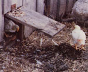
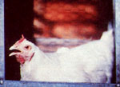
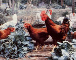
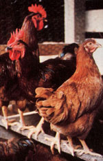
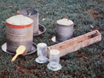
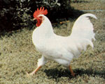

MOTHER's veterinarian is back again, with tips that can help anyone raise his or her own backyard flock of hens and roosters by following the . . .
Chickens are, in my opinion, ideal livestock critters for the beginning homesteader or backyard farmer. More and more folks are discovering that raising their own poultry can provide them with all the fresh eggs they could ever want -and lots of tasty fried, roasted, or stewed chicken as well-frequently for a fraction of the commercial variety's cost!
What's more, the homegrown cluckers won't reach your dinner table filled with growth stimulators, hormones, antibiotics, and whatever else goes into storebought poultry these days. And their eggs will actually be fresh . . . with rich yellow yolks that stand right up in the frying pan.
In addition, a backyard flock can provide a good supply of manure for the compost pile or garden, and you can even use your friendly fowl for pest control (especially in the fruit orchard).
And, perhaps most important of all, it's really pretty easy to raise chickens. In order to establish your own flock, you'll just have to set aside a bit of space, build a small coop, obtain a few birds, and follow my ten commandments of poultry care . . . five of which are given in the following paragraphs, while the other five will constitute a second article, in MOTHER NO. 68.
The kind of chickens you select will depend upon your purpose in raising them. Today-thanks to the ingenuity and selective breeding efforts of scientists and poultry fanciers-the birds are available in all sizes, shapes, colors, and feather patterns (there's a total of 350 different combinations). But generally speaking, chickens can be divided into four main classifications: the egg-layers, the meatmakers (broilers), the dual-purpose birds (meat and egg producers), and the exotic or exhibition breeds.
Each general type of fowl is represented by various breeds, which in turn comprise several varieties apiece. Breed is a term used to categorize a group of individuals whose characteristics can be passed on to future generations. A va riety-on the other hand-is a class of birds, within one breed, that differ from other varieties of that breed . . . usually by only one characteristic. For example, the Buff Orpington and the Black Orpington are of the same breed (Orpington), but are different varieties within that breed (the differing characteristic in this case is color: one variety is black, the other is buff).
Egg-laying breeds have been developed specifically for that single purpose. A good Leghorn (the most common "egger" breed) will lay 250 to 300 whiteshelled breakfast treats a year . . . but don't expect to use such a bird as a fat fryer or plump roasting hen. These barnyard fowl will barely tip the scales at four pounds . . . no matter how much you feed them!
Broilers, on the other hand, will often weigh in excess of eight pounds . . . and-if you keep pouring feed into them-the roosters may reach 17 to 18 pounds. Such tasty grain-peckers can be butchered when they are anywhere from 5 to 24 weeks old, depending on how much meat you want from each bird. (In fact, Cornish Game Hens are nothing more than smallish, five-weekold hens of the Cornish Rock "broiler" breed.)
The chickens most often found on supermarket fresh meat counters are probably eight-week-old broiler-type birds, either male or female. (The roasters that are displayed in a grocery store's frozen food case are birds that were allowed to reach 11 to 15 weeks of age before being butchered.)
Dual-Purpose breeds fall somewhere between the two aforementioned groups in size and characteristics. They will not only lay a goodly number of eggs (about 200 to 250 per year), but will also grow into fairly hefty birds . . . weighing five to six pounds when they reach maturity (within six months).
Exotic or exhibition birds aren't bred for egg or meat production specifically. These fowl are most often unusually colored chickens, decked out in brilliantly hued costumes of head-to-toe feathers. They're primarily show birds and are exhibited in various "poultry pulchritude" competitions.
Like most living creatures, a chicken sometimes needs a place to get in out of the rain, wind, and sunshine. Besides four walls and a roof, your birds' coop should have a roost for the sleepyheads to doze upon (most bantams won't use a roost, though) and a secluded place for the hens to sit while laying their eggs.
Day-old chicks will need about half a square foot of indoor floor space per bird until they're about six weeks old. (The young birds will also need a brooder-either the hen that hatched them or a heated enclosure-to keep them warm. Techniques for raising chicks will be discussed in Part II of this article.) Adults require three square feet apiece. (If you provide an outdoor run as well, the "indoor" figure can be cut in half.)
Every bird should have ten inches of roosting space. A limb that's about two inches in diameter works well as a perch, or you can simply round the edges of a length of 2 X 2 board. Place the roosts 24 inches from the floor, spaced 13 to 15 inches apart.
Mama hens need nest boxes to hide in while they're laying eggs, so make a number of the simple "open-faced" shelters-each about 12"square, with a perch in front-and situate them 24 inches off the floor. (Not every hen will need a box . . . one for every four biddies should be plenty.)
As you build your coop, keep in mind that ventilation and sanitation are both extremely important. For that reason, the easier the shelter is to clean, the better. Always keep plenty of fresh, dry litter on the floor (there are a number of good inexpensive materials that can be used . . . including sawdust, wood chips, straw, old hay, and leaves).
Several times each year-using a wire brush-scrub all the roosts, nest boxes, feeders, and waterers with a solution of one tablespoon chlorine bleach per gallon of water. [EDITOR'S NOTE: There are differing opinions as to how frequently a chickenhouse ought to be cleaned. Some sources even suggest that a coop should never be completely emptied of droppings, as the biological activity generated in soiled litter is helpful to the chickens, and may prevent cannibalism. Let your own judgment be your guide . . . but never allow the coop to become obviously dirty!] You'll find your cleaning chores easier if you put a shallow wirecovered pit beneath the roosts. (Use a scrap wood frame covered with 1/2" wire mesh for the "lid".) The pit will act as an easily cleaned collector for droppings . . . which can then go directly into the compost pile.
A portable coop (that is, a shelter on wheels) will enable your poultry to serve more than one function . . . because, with a movable house, it'll be easy to transport the chickens to a fresh "pasture" every week or so. On each site, the birds will scratch and dig . . . and eat many of the pests that are getting ready to attack your garden. Then-after they feast on greens and bugs-the hens will deposit a layer of fresh soil fertilizer. So, in essence, the birds act as miniature farm implements. They remove weeds, turn the earth, kill the bugs . . . and fertilize the soil!
Of course, if you have the space, it's possible to let your feathered friends "run the range". Free-roaming birds are able-by choosing their fare everyday -to balance their own diets. (And giving them the run of some pastureland is certainly easier on your budget than having to purchase all their food. However, most "range" chickens need to have their diets supplemented with commercial feed containing 5 to 15% protein.)
Furthermore, unconfined birds can take daily dust baths . . . which will help keep the critters free of mites. One word of caution, though: Roamers can be active and aggressive garden destroyers. They'll love all your succulent, newly emerged seedlings. So either fence your chickens' pasture in, or fence the birds out of your garden!
And while you're building enclosures, keep in mind that you'll need to provide some kind of protection from predators. Make your range fencing-and the coop-ratproof, and strong enough to restrain roaming dogs, raccoons, coyotes, and other possible predators. (A two-foot-wide band of small-mesh welded wire, secured to the lower portion of the chickenwire fence and extending a good six inches underground, should do the job.)
A healthy, normal chicken is bright-eyed, alert, and active. If you spend some time with healthy chickens, you'll soon be convinced that they're smarter and cuter than most humans!
In contrast, a sickly bird will have dull and expressionless eyes, and will sit with head drooping and feathers fluffed out. (A hen that's "broody"-that is, one that either is trying to hatch eggs or thinks she is-will often look about the same. It'll take a little time to learn how to recognize which chicken "symptom" is which.)
There are several ways to purchase chickens. Your situation will likely determine how you choose to start your flock.
Most folks get started by buying dayold chicks and raising them at home. The babies can be bought in batches of 25, and you can purchase sexed chickens (all roosters or all hens . . . depending on whether you want meat or eggs) or-if you don't particularly care about the gender of the birds-"straight runs". (These are sold just as they come out of the eggs, at about a one-to-one ratio of males and females.)
Sexed chicks will cost around twice as much as do straight runs. Of course-as always-prices will vary from area to area and from breed to breed. (I've seen sexed chicks costing anywhere from 35 cents to 75 cents a bird.) But young roosters of egg laying breeds should cost next to nothing . . . five cents each is more than they are worth to most poultry raisers. [EDITOR'S NOTE: In MOTHER NO. 55, Ron Spomer told how he obtains castoff cockerels for free . . . from commercial hatcheries! Back issues cost $3.00-plus $1.00 for shipping and handling-from THE Mother Earth News(restricted) P.O. Box 70, Hendersonville, North Carolina 28791. ]
If you'd prefer not to raise the chicks yourself, it's possible to purchase older birds that'll be ready to lay eggs a few weeks after you receive them. These pul lets , as they're called, are usually from 18 to 20 weeks old and will cost five or six times as much as will straight-run chicks. (You can probably figure on paying $2.00 to $3.00 per hen.)
It might also be worth your while to purchase mature hens from other raisers. Older biddies won't cost much, because they'll likely be past their egg-laying prime and therefore aren't considered very valuable. In our area, such hens run from 50 cents to $1.50 a head.
An egg-laying chicken has only one year of peak egg production. After that 12-month period, she'll molt, (lose her feathers) and stop producing. In about six to eight weeks the hen will regrow her plumage and begin to lay again, but the number of eggs will be at least 10% lower than during her first year. Keeping in mind that a nonproducing chicken will cost you almost as much time and money as will a good layer . . . you'll probably want to consider managing your flock in the following manner:
In the spring, purchase a batch of day-old, dual-purpose chicks (straight run). When the young'uns reach 20 to 24 weeks of age, you can butcher the roosters and expect the hens to begin laying.
Then, the following spring, buy a replacement batch of day-old, dual-purpose babies and begin again. (Because many commercial breeds are hybrids, it's usually best not to attempt to hatch your own stock's eggs. A further explanation of this will be given in Part II of this article, in MOTHER NO. 68. )
During that second (and each succeeding) year, when the time comes to kill your 20- to 24-week-old roosters, you can butcher the previous season's hens (for stewing purposes) as well! And by the time you've put the roosters and old hens in your freezer, the remaining young biddies will be about to begin their laying duties.
A good hen, in peak egg production, will lay about once every 30 hours. She'll produce best, however, when she's exposed to 14 daily hours of daylight. So in the fall-when the sunshine hours decrease and egg production tapers off-you can keep that hen fruit rolling in by setting up an inexpensive light timer, to keep the coop bright for the recommended 14 hours per day.
All in all, keeping a backyard flock of rooster(s) and hens can be a very rewarding experience. You'll be .treated to fresh, wholesome food and the opportunity to watch the often fascinating social interaction of your birds. And if you keep a rooster around (it isn't necessary to do so to get eggs, but having one of the old boys in the coop does seem to lend an air of completeness to the flock), you -and your (we hope) tolerant neighbors-will be treated to the early morning crowing chorus that has wakened humankind for centuries!
EDITOR'S NOTE: Randy Kidd will be back in issue 68, to tell us the rest of his ten commandments for productive poultry.
|
 Curious chicks step from their brooder into a bright new world. |
 Back in the nest box, Mom announces another egg. |
 Chickens enjoy foraging in the garden, so be careful. |
|
 These Rhode Island Reds perch on a roost made from a 2x2 (round all edges, and allow 10 a bird). |
 Wash feeders and waterers often. |
 Note the erect posture, clear eyes and full plumage of this healthy bird. |